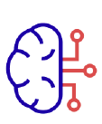
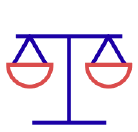

Formation GitHub
Notions de base
Cinq notions pour démarrer
- 01 Introduction — commits et instantanés
- 02 Vocabulaire — six objets et références
- 03 Mise en route — du zéro au premier commit
- 04 Workflow — le cycle d'une branche
- 05 Collaboration — fusionner sans tout casser
Chaque commit est un instantané, pas une différence
Git modélise l'historique comme un graphe orienté acyclique (DAG) d'objets identifiés par hachage SHA-1 — pas une suite de patchs appliqués les uns après les autres.
Un système de contrôle de version distribué : chaque clone contient l'historique complet, sous forme d'objets stockés dans .git/objects (blobs, trees, commits).
Un hébergeur de dépôts Git qui ajoute une couche collaborative : pull requests, issues, CI/CD (Actions), gestion des accès — sans modifier le fonctionnement de Git.
- Working directory — les fichiers tels que vous les éditez sur le disque.
- Staging area (index) — la prochaine photo en préparation, construite avec
git add. - Repository (HEAD) — l'historique déjà validé, sous forme de commits immuables.
Six objets et références à connaître
Le modèle de données de Git repose sur peu de primitives. Une fois posées, tout le workflow devient prévisible.
Le dossier .git : une base d'objets adressés par hachage (blobs = contenu, trees = arborescence, commits = snapshots).
Objet immuable identifié par une empreinte SHA-1, pointant vers un tree et vers son ou ses commit(s) parent(s).
Une référence mutable (un fichier de 41 octets) qui pointe vers un commit. Créer une branche ne copie aucun fichier.
Référence symbolique vers la branche courante. En état detached HEAD, elle pointe directement vers un commit.
Zone intermédiaire entre le répertoire de travail et le prochain commit ; alimentée par git add.
Un alias vers l'URL d'un autre dépôt (origin) ; git fetch télécharge ses références sans toucher à la branche locale.
De zéro à un premier commit signé
Quatre étapes pour une configuration locale correcte, avant le premier push.
-
01
Générer une clé SSH
ssh-keygen -t ed25519 -C "email", puis ajouter la clé publique dans Settings → SSH keys sur GitHub. -
02
Initialiser ou cloner
git initpour un nouveau projet,git clone git@github.com:…pour un dépôt existant (protocole SSH). -
03
Configurer l'identité globale
git config --global user.name/user.emailetinit.defaultBranch main. -
04
Écrire un
.gitignoreDès le premier commit, pour exclure
node_modules/,.env, artefacts de build et secrets locaux.
Le cycle d'une branche de fonctionnalité
De la création de la branche jusqu'à sa publication, en passant par un index construit hunk par hunk.
$ git switch -c feature/menu-fix # nouvelle branche depuis HEAD $ git status # état du répertoire de travail $ git diff # revoir les changements non indexés $ git add -p # indexer par hunks, sélectivement $ git commit -m "fix(menu): corrige le lien cassé" $ git push -u origin feature/menu-fix # publie, lie le tracking $ git log --oneline --graph --decorate # visualiser le DAG
Fusionner sans perdre le fil de l'historique
GitHub ajoute une couche de revue et d'automatisation au-dessus des primitives de fusion de Git.
Compare deux références (branche vs main) ; GitHub calcule un diff à trois points via le merge-base commun.
Commentaires ancrés sur des lignes précises d'un commit ; les threads doivent être résolus avant la fusion.
merge crée un commit de fusion (historique fidèle) ; rebase réécrit les commits sur une nouvelle base (historique linéaire).
- Un conflit se résout en éditant les marqueurs
<<<<<<< / ======= / >>>>>>>, puisgit add+commit(ourebase --continue). - Les branch protection rules imposent une CI verte et une revue approuvée avant de fusionner sur
main. - Un message de commit suit souvent une convention (
type(scope): résumé) pour un historique exploitable par les outils.